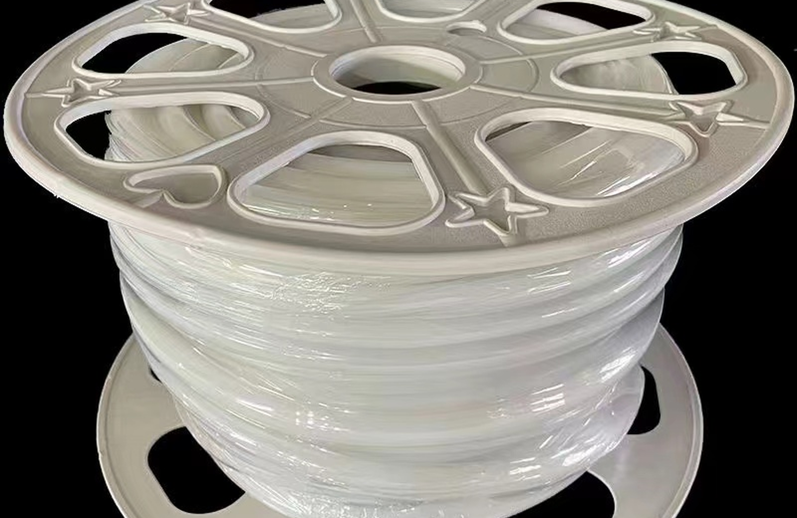
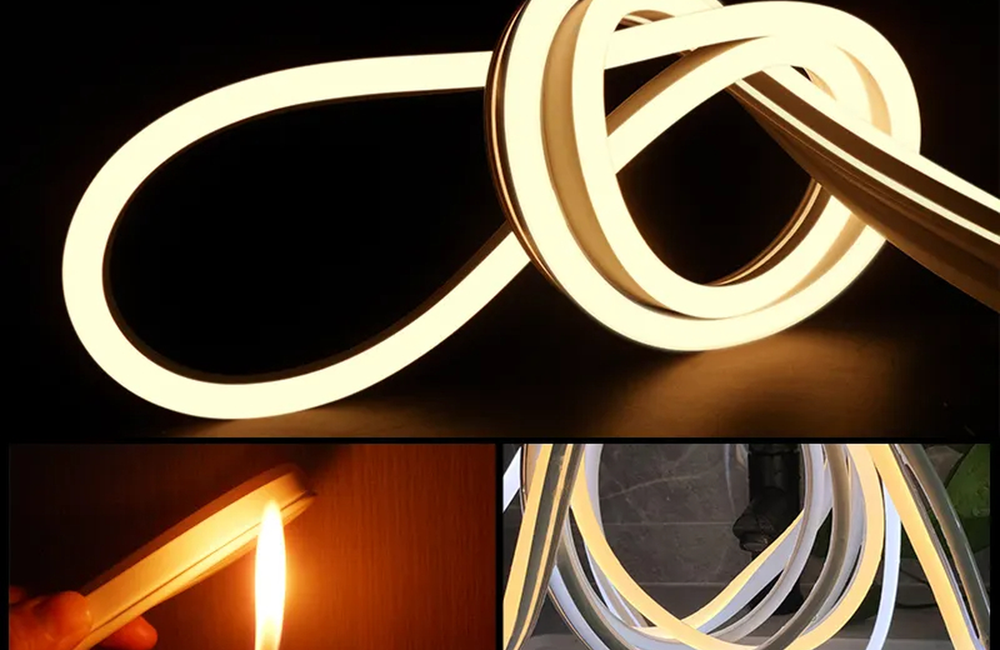
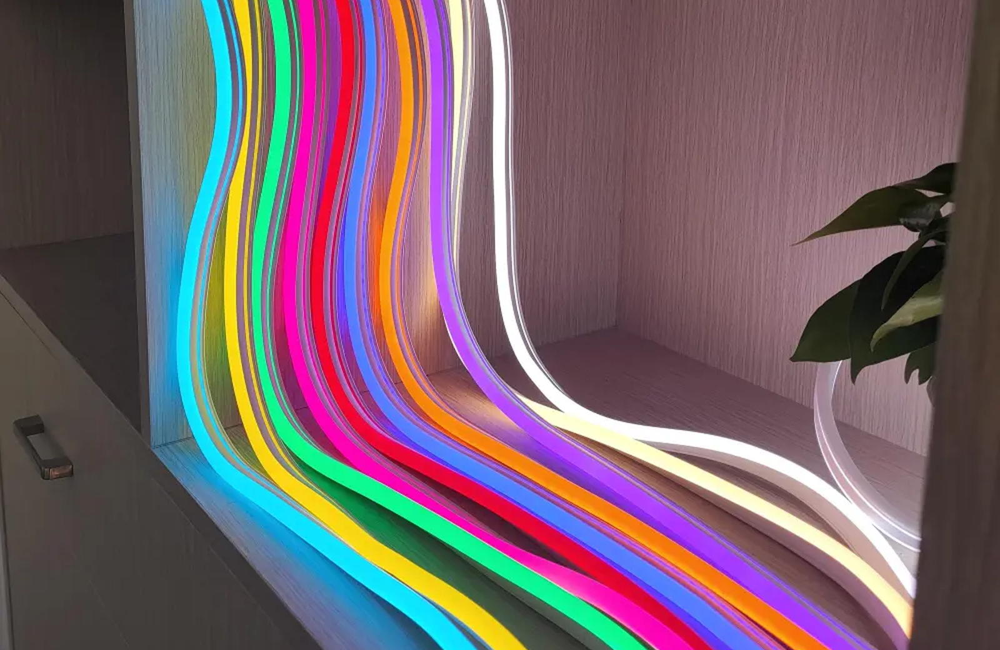
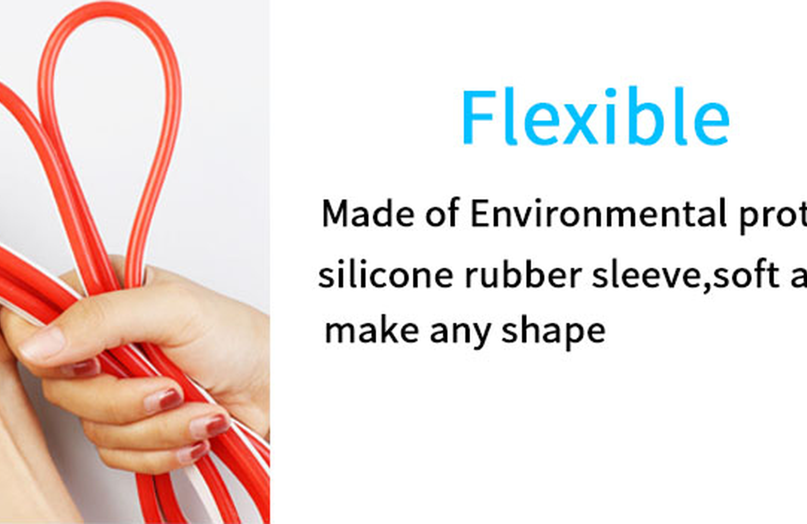
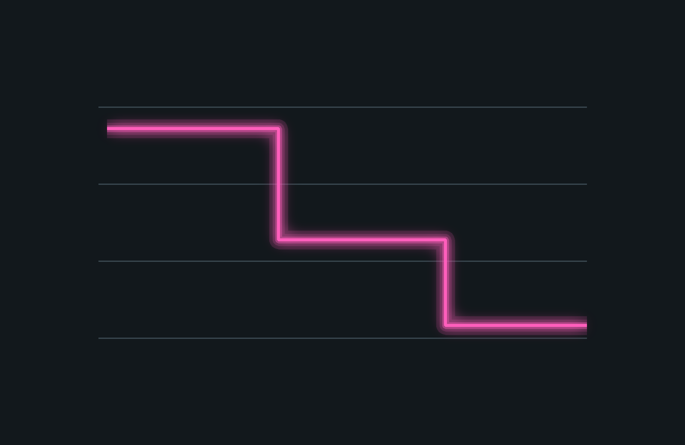

Neon 24V para linha contínua
Especificação para trechos lineares em fachada, teto, vitrine e circulação.
24Vlinhaprojeto
Consultar especificação

Neon Flex • 24V
Fita Neon LED 24V para projetos que precisam de linhas mais longas, planejamento de alimentação e fornecimento por metragem. Em projetos comerciais, 24V ajuda na organização técnica, mas a estabilidade depende da potência por metro, fonte, cabos e distribuição por zonas.
Mapa técnico
Referência estrutural: páginas de categoria da Flexfire com filtros por tipo, uso e especificação. Adaptação: linguagem de projeto, cotação, lote e documentação técnica para clientes B2B no Brasil.
Modelos e aplicações
Cluster principal: fita neon led 24v. Termos de apoio: fita led neon 24v, neon flex 24v, fita de led neon 24 volts, fita neon para projeto.

Especificação para trechos lineares em fachada, teto, vitrine e circulação.

Adequado para cotação por metragem, lote e documentação técnica.

Planejamento de fonte e alimentação por zonas para reduzir queda de brilho.

Guia B2B
A tensão 24V é uma escolha comum em projetos profissionais porque facilita o planejamento de linhas maiores em comparação com soluções de menor tensão. Ainda assim, não elimina a necessidade de cálculo. O fornecedor ou integrador deve levantar potência por metro, metragem total, distância até a fonte, pontos de alimentação e ambiente de uso. Para B2B, a página precisa orientar o lead a enviar dados técnicos, não apenas pedir preço por metro.
Aplicações comerciais
As aplicações ajudam o time comercial a qualificar o lead por ambiente, nível de exposição e necessidade de controle.
Trechos contínuos com alimentação planejada.
Planejar aplicaçãoLinhas de luz por zonas de exposição.
Planejar aplicaçãoPadronização de metragem, tensão e acessórios por lote.
Planejar aplicaçãoFAQ técnico
Respostas orientadas para integradores, distribuidores, arquitetos e clientes de projeto.
Para trechos maiores, 24V costuma facilitar o planejamento. A escolha final depende do produto e do projeto.
Não. A tensão da fonte deve ser igual à tensão do Neon.
Multiplique potência por metro pela metragem total e acrescente margem técnica.
Metragem, ambiente, cor, tensão, IP desejado, desenho do percurso e quantidade por lote.
Cotação B2B
Para retorno técnico, envie metragem, cor, tensão, proteção IP, ambiente de instalação, desenho do percurso e quantidade estimada por lote.